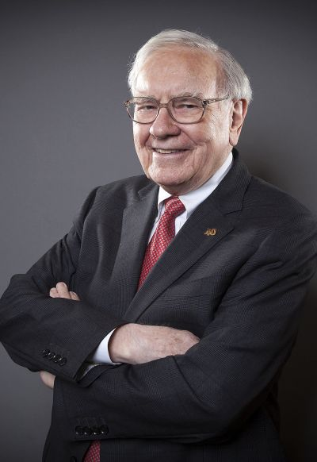
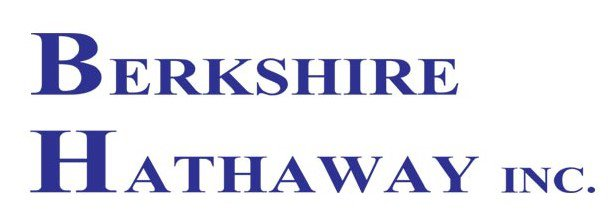

Warren Buffet
El inversor más famoso de la historia

La rentabilidad media obtenida ha superado constantemente al índice de referencia.
Lector voraz que desde pequeño ha estado vinculado al mundo de la inversión, siguiendo los pasos de su padre, leía y asimilaba sus manuales e informes de inversión. Desde ese momento y hasta la actualidad, siempre ha estado vinculado al mundo de los negocios y las finanzas.
Su estilo de inversión ha estado influenciado principalmente por su profesor y jefe poco después, Benjamin Graham, y por su gran amigo y mano derecha de Berkshire Hathaway: Charlie Munger. Su amor y dedicación a la inversión y su gran capacidad de entendimiento del mundo de los negocios le ha permitido cosechar una de las mayores fortunas del mundo en la actualidad. Tal ha sido su buen hacer que su patrimonio inicial, de 100 mil dólares, (1956) se ha convertido en un patrimonio que, a día de hoy se considera una de las mayores fortunas del mundo, de 114.800 millones de dólares (julio del 2023).
Experiencia académica:
- Graduado en Administración de Empresas en la Universidad de Nebraska-Lincoln.
- Máster en Ciencias Económicas en Columbia Business School.
- Alumno más destacado en las clases de Benjamin Graham.
Experiencia profesional:
- Desde pequeño mostró un espíritu emprendedor, poniendo en marcha varias ideas de negocios.
- Desde 1952 a 1956 trabajó como analista en la compañía de su antiguo profesor Benjamin Graham, en Graham-Newman.
- Creo su propia compañía: Buffet Associates, Ltd.
- En 1962 conoce a Charlie Munger, quien se convertirá en amigo, y en un futuro su mano derecha, ejerciendo una gran influencia en su filosofía de inversión.

¡Tu opinión cuenta!
¿Consideras a Warren Buffet como el mejor inversor de la historia?
Trabajo realizado por Juan Ferrando, Septiembre 2023.